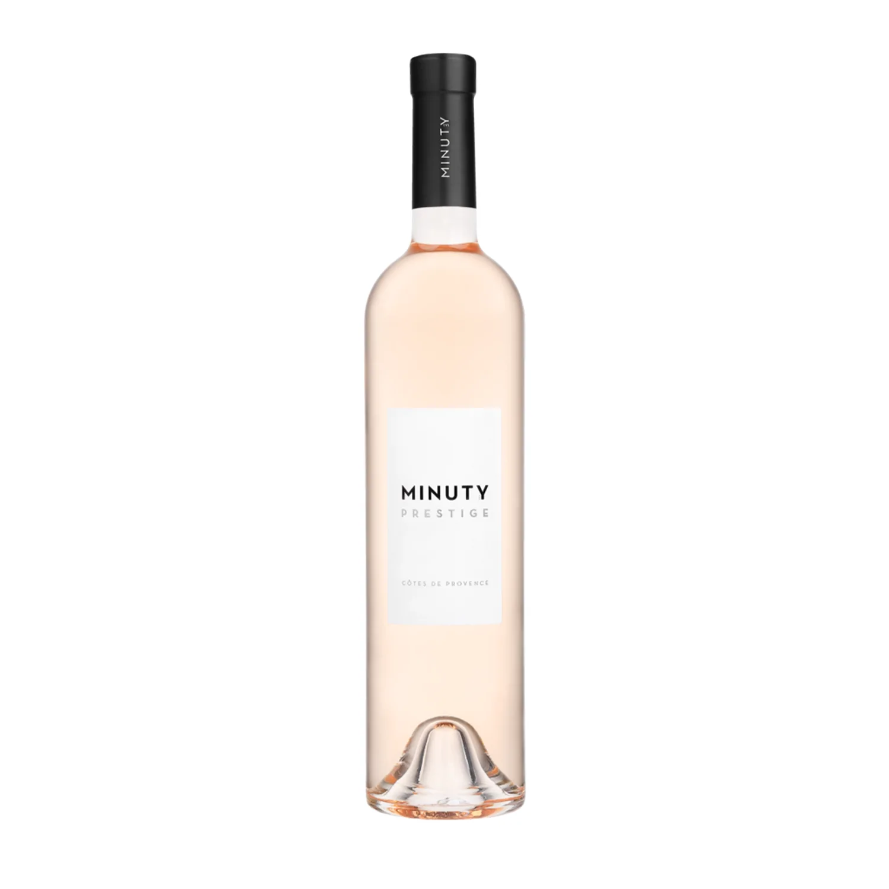
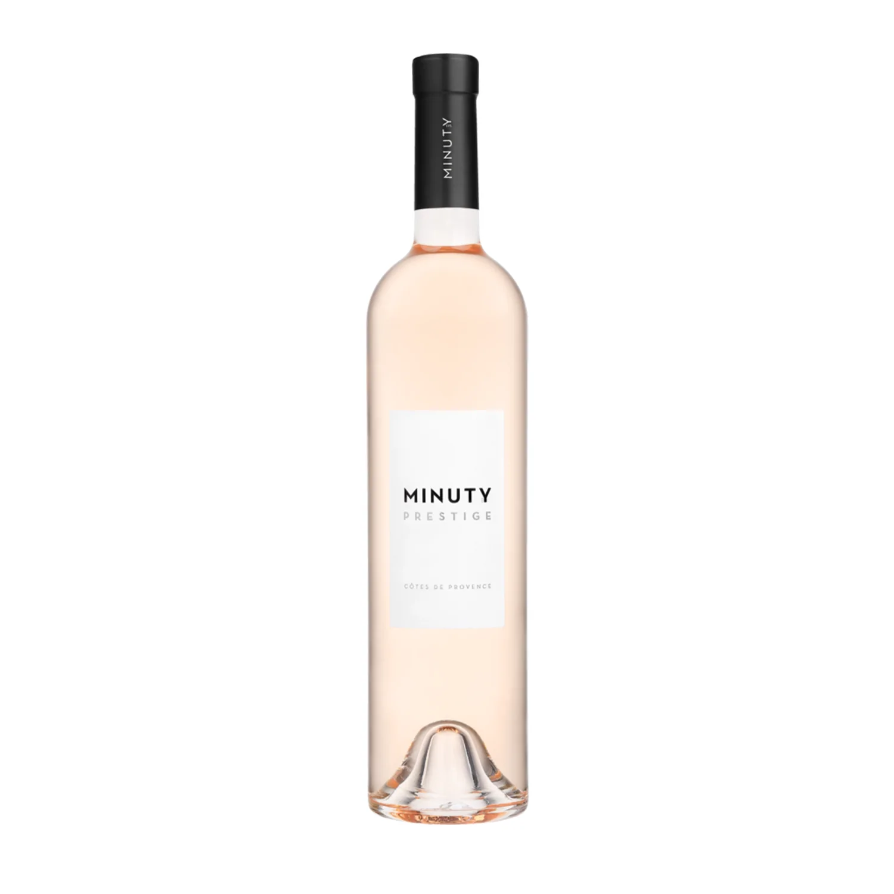
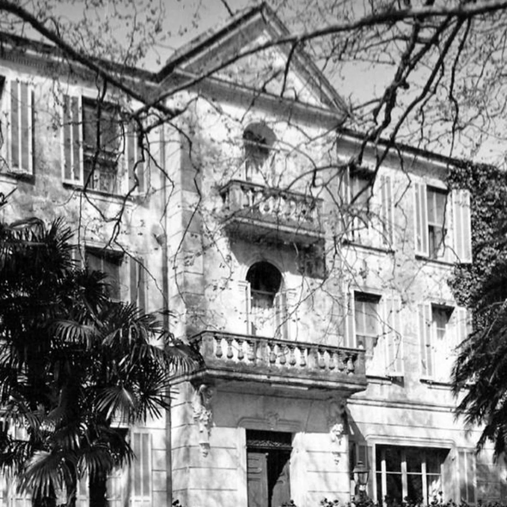

1. Description
Le Château Minuty est un domaine viticole de 170 hectares situé à Gassin, dans la presqu’île de Saint-Tropez.
2. Logo
3. LES VINS
MINUTY vend 4 gammes differentes de vin
 

Pour acheter les produits MINUTY, il est possible d'acheter au chateau ou sur le site internet
site internet
les boutiques
4. LE CAVEAU
Un lieu convivial et élégant, à l'image du domaine et de ses vins, découpé en plusieurs espaces : le caveau de dégustation, la vinothèque qui abrite les anciens millésimes et un salon de dégustation pour les professionnels.
L'espace d'accueil est ouvert du lundi au vendredi de 10h à 12h et de 14h à 18h et les samedis et dimanches en période estivale.,
5. LE CHATEAU
Au milieu du xixe siècle, il existait une bastide de 54 m2. Elle fut augmentée lors de travaux réalisée à la fin des années 1860. Le château est utilisé aujourd’hui dans un cadre essentiellement privé. Toutefois, des cours de cuisine sont proposés également
6. Histoire
La vigne est cultivée depuis de nombreux siècles à Gassin. Un livre terrier de 1691 note ainsi les vignes du domaine de Joseph Minuty. C’est ce nom de famille qui a donné son nom au quartier puis au château. Le domaine a longtemps appartenu à la famille Germondy, qui a marqué l’histoire de Gassin et de la Presqu’île par ses notables, fournissant notamment des notaires royaux. Le château Minuty a été créé en 1936 lorsque le propriétaire, Gabriel Farnet, fit replanter les vignes sur le domaine après son rachat. Dans les années suivantes, le domaine a souffert lors de l’occupation d’une partie de ses terres par les troupes alliées, empêchant la taille des vignes durant deux années. Le domaine appartient depuis à la famille Matton-Farnet, Étienne Matton ayant succédé à son beau-père, et ses deux fils, François (qui a fait des études de gestion) et Étienne (œnologue), ayant repris la direction dans les années 19904. Il fait partie des 23 domaines de Provence qui obtiennent en 1955 la mention cru classé. En 2010, le magazine Le Point précise que c'est « l'un des plus importants producteurs de la région » avec 2,5 millions de bouteilles annuelles. Dans un article quatre ans après, La Revue du vin de France le présente comme « le domaine numéro 1 de la presqu’île de Saint-Tropez ». Il est reconnu par ses concurrents et par d’importants acteurs du monde du vin
